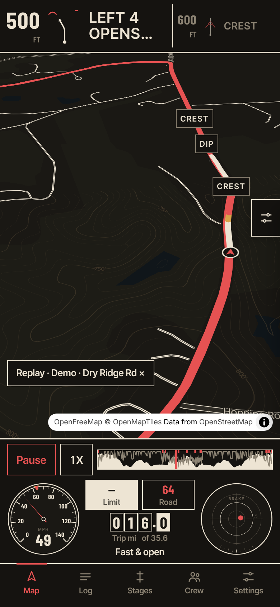
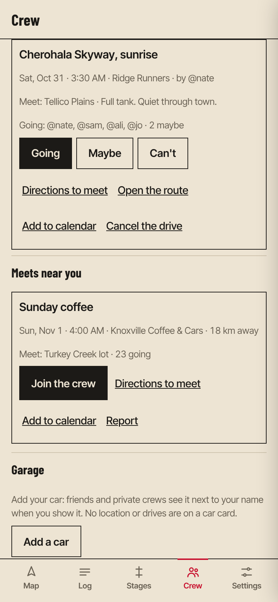

Vetta
VettaA co-driver for the long way home.
Vetta reads the road ahead out loud, finds the twisty roads near you, and scores how smoothly you drove them. Never how fast.
Open the app in your browser
Watch a replay
On iPhone: in TestFlight now, by invitation. Ask a member for an invite.


Four promises
No racesThere are no speed or time leaderboards anywhere, and no records of how fast anyone went.
Yours until you share itDrives stay on your phone. Privacy zones keep home and work out of everything.
Unknown stays unknownWhen the app doesn't know, it shows
--, never a guess dressed up as a measurement.No subscriptionNo ads, no data sold, nothing to unlock.
What it does
- Pace notes, spoken in plain words or rally notes, timed to your speed so you hear them at the entry, not the apex. The voice works with no signal.
- Directions in the same voice, never on top of a corner call.
- Find the good roads: loops of the length you want, or the most fun way to a destination. More hairpins or more sweepers, your call.
- A Vetta Score for every drive, corner by corner, and a live delta against your best on the stages you mark.
- Drive together: convoys, crew drives with a convoy on the day, hazard reports for the drivers behind you.
- A crash check that asks if you're OK after a hard impact. A backup to your phone's own, not a replacement.
Always drive within the law and the conditions. Vetta is not a racing app.